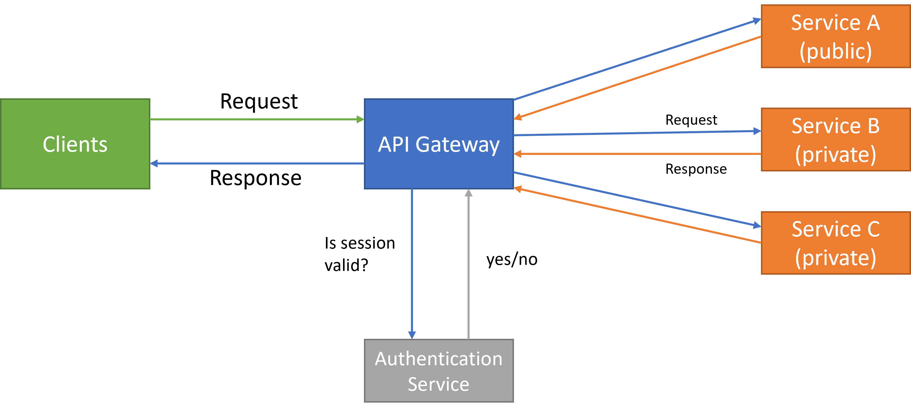
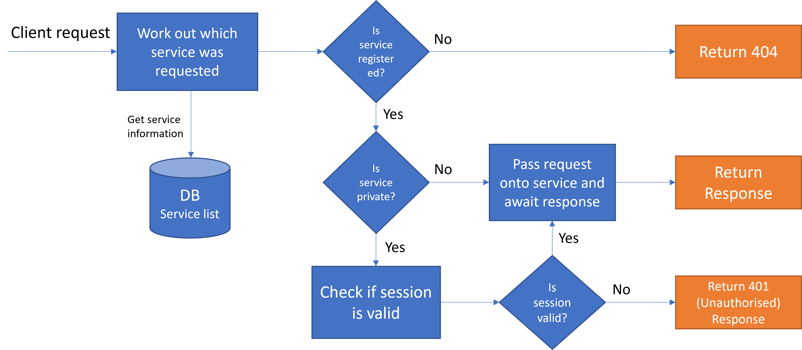

Learning Objectives
- Explain microservices architecture and its benefits/drawbacks.
- Develop and secure a simple REST API with authentication.
- Evaluate when microservices are suitable vs. monoliths.
API Gateway Diagram Animation
Theory Summary
Definition: A microservices architecture structures an application as a set of small, loosely coupled, independently deployable services that communicate over network APIs.
Key Characteristics
- Independence: Each service owns its lifecycle and data store.
- Communication: HTTP/REST or messaging (e.g., queues).
- Resilience: Failures are isolated when properly designed.
Benefits & Trade‑offs
- ✔ Independent scaling and deployment.
- ✔ Technology diversity per service.
- ▲ Increased operational complexity.
- ▲ Observability, testing, and data consistency challenges.
How Microservices Work
See real‑world flow (e‑commerce case)
User places an order → API Gateway → Order Service → Inventory Service → Payment Service → Response. Services publish events to a message bus to keep data eventually consistent.
Coding Task — Beginner
Create an endpoint /status that returns { "service":"User","status":"Running" }.
Need a hint?
- Use
res.json({...})to return JSON. - Make sure your path is exactly
/status.
Coding Task — Advanced
Protect the /status route with JWT authentication.
Hints
- Install
jsonwebtoken, create anauthmiddleware, and place it before the handler. - Return
401for missing/invalid tokens.
Weekly Quiz
Start Quick QuizPeer Discussion
Prompt: Your company is migrating from a monolith to microservices. Identify the top three challenges and propose strategies to address them (e.g., data consistency, observability, deployment).
In the LMS, this will be a threaded forum with voting and a “Top Contributor” badge.
Accessibility & UX Notes
- Semantic headings and ARIA labels on interactive elements.
- High‑contrast palette and focusable controls.
- Animations are decorative; critical information is available as text.